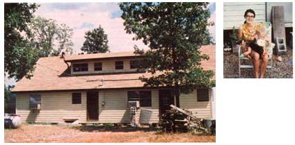

LEFT: This is the complete version! ABOVE: If we'd known from the start tht we'd end up staying in the country, we'd have done things a bit differently, but we probably wouldn't have been any happier.